VGGT pose (estimated pose)
trans: -0.073, 0.180, -0.003
rot: -0.056, 7.873, 1.205
GT pose (target pose)
trans: -0.140, 0.402, 0.117
rot: -4.220, 11.781, 0.000
∠(rot) = 5.687°
∠(trans) = 16.619°
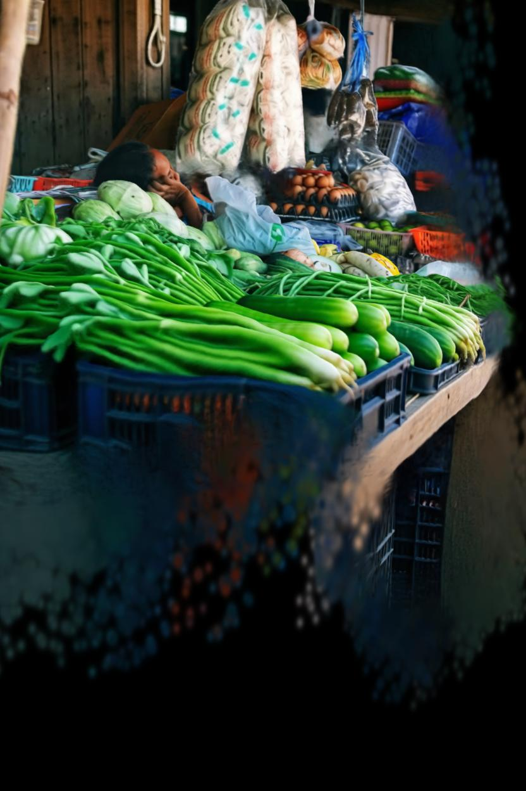
1Beijing Institute of Technology 2University of California, Merced
*Equal contribution. †Corresponding author.
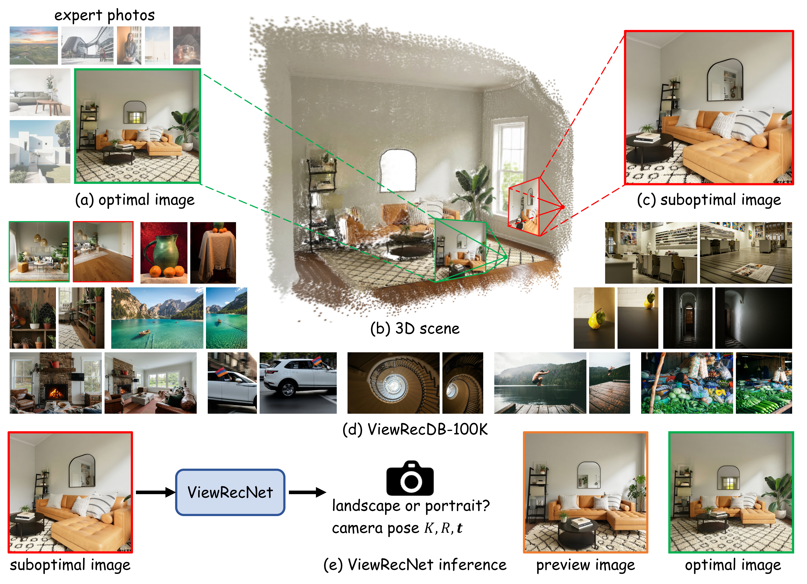
Viewpoint dictates the photo composition and plays a vital role in AI photography. Existing 3D viewpoint recommendation methods are often limited in viewpoint adjustments, which is mainly due to their lack of high-quality training data with accurate and large 3D view changes. Ideally, the training data should contain suboptimal images and expert-selected optimal viewpoints, but this can be very expensive to curate. To solve this, we build an automatically-generated 3D viewpoint recommendation dataset from expert photos. Specifically, we first consider these expert photos as optimal and outpaint them to provide more information on scene layouts. Next, we explicitly reconstruct the 3D scene. We then render suboptimal images from random viewpoints. Lastly, we introduce a hierarchical data filtering scheme and acquire high-quality data pairs for our ViewRecDB-100K dataset. On top of this, we further introduce a view recommendation model, ViewRecNet, that can predict expert viewpoints from any suboptimal image inputs using a ray-based dense supervision. The proposed method achieves strong results both quantitatively and qualitatively, supported by LLM-based viewpoint preference and human studies.
Data generation pipeline. Starting from expert photographs, we generate suboptimal-to-optimal viewpoint pairs through image outpainting, 3D Gaussian reconstruction, random-view rendering, and image restoration.

Hierarchical filtering. We apply hierarchical filtering to outpainted images, rendered views, and restored images, using image similarity, LLM-based visual checks, and VGGT-based pose verification to retain high-quality pairs.

visualize
Select an original image below to explore its visualization. Translation: (x, y, z). Rotation: (pitch, yaw, roll), in degrees. Angular errors compare estimated and target poses. Move the pointer over the images, or swipe on touchscreens, to compare views. Use the arrow keys when a comparison is focused.
VGGT pose (estimated pose)
trans: -0.073, 0.180, -0.003
rot: -0.056, 7.873, 1.205
GT pose (target pose)
trans: -0.140, 0.402, 0.117
rot: -4.220, 11.781, 0.000
∠(rot) = 5.687°
∠(trans) = 16.619°

VGGT pose (estimated pose)
trans: -0.295, -0.017, 0.022
rot: 16.135, 33.753, -0.430
GT pose (target pose)
trans: -4.272, 0.195, 0.417
rot: 10.755, 24.168, 0.000
∠(rot) = 11.098°
∠(trans) = 6.035°
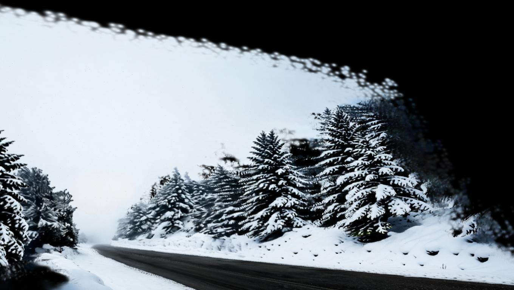
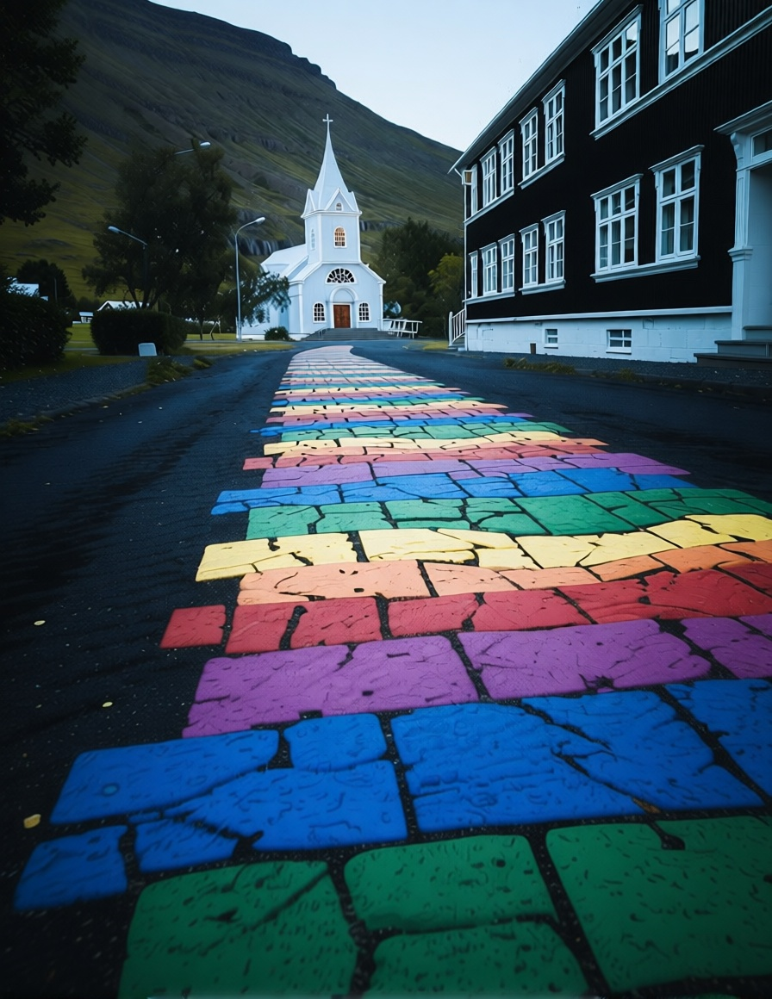
VGGT pose (estimated pose)
trans: -0.070, 0.021, 0.159
rot: -15.385, 6.716, -0.243
GT pose (target pose)
trans: -0.925, 0.223, 0.211
rot: -13.847, 5.891, 0.000
∠(rot) = 1.738°
∠(trans) = 52.889°
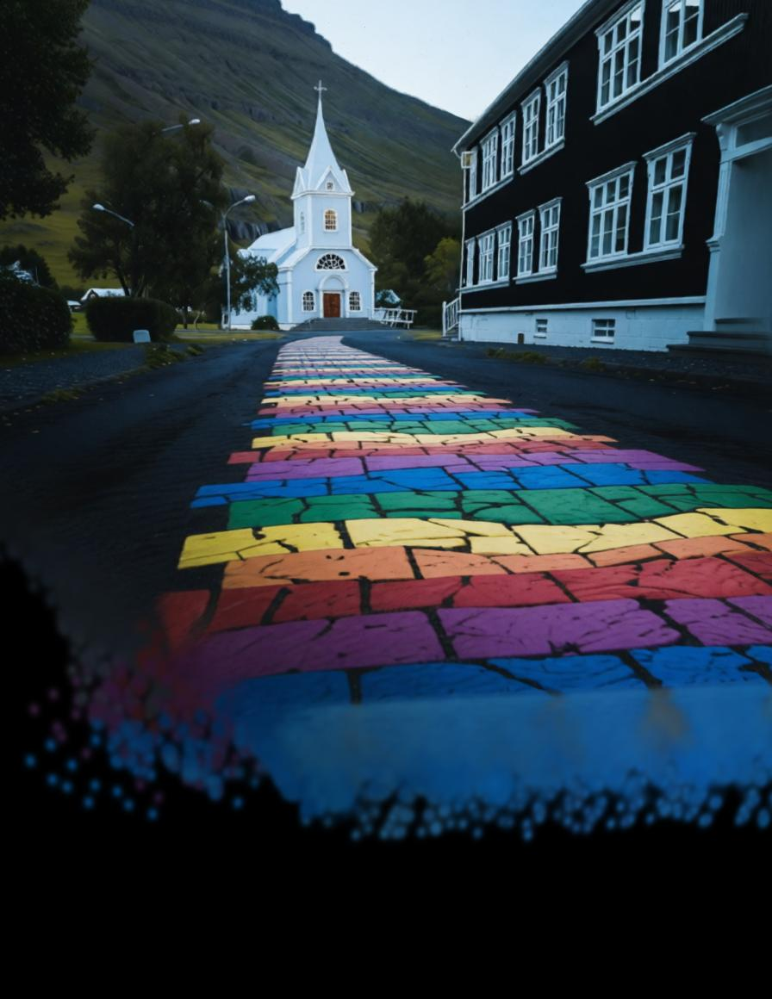
VGGT pose (estimated pose)
trans: -0.100, 0.120, 0.121
rot: 34.165, 2.855, 4.042
GT pose (target pose)
trans: -0.223, 0.273, 0.136
rot: 33.653, 7.694, 0.000
∠(rot) = 6.295°
∠(trans) = 16.729°
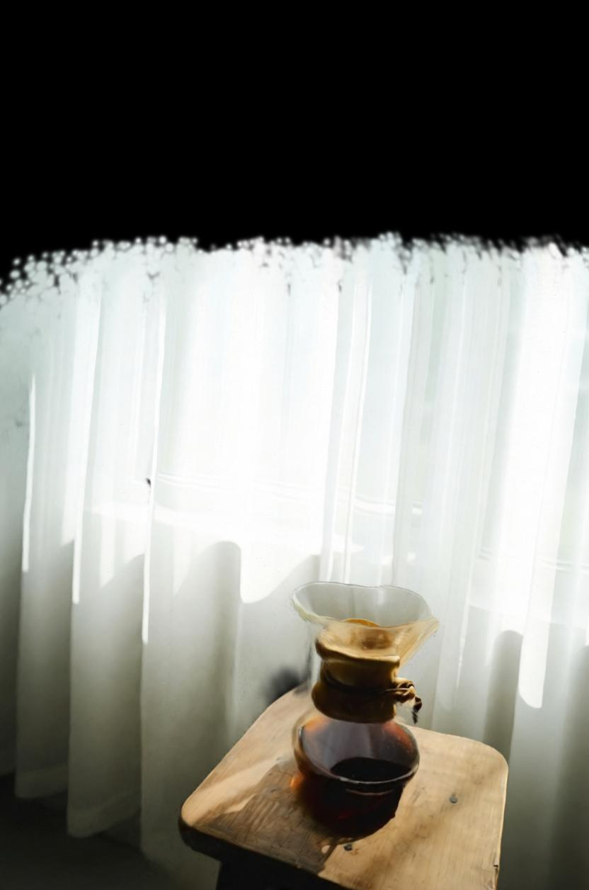
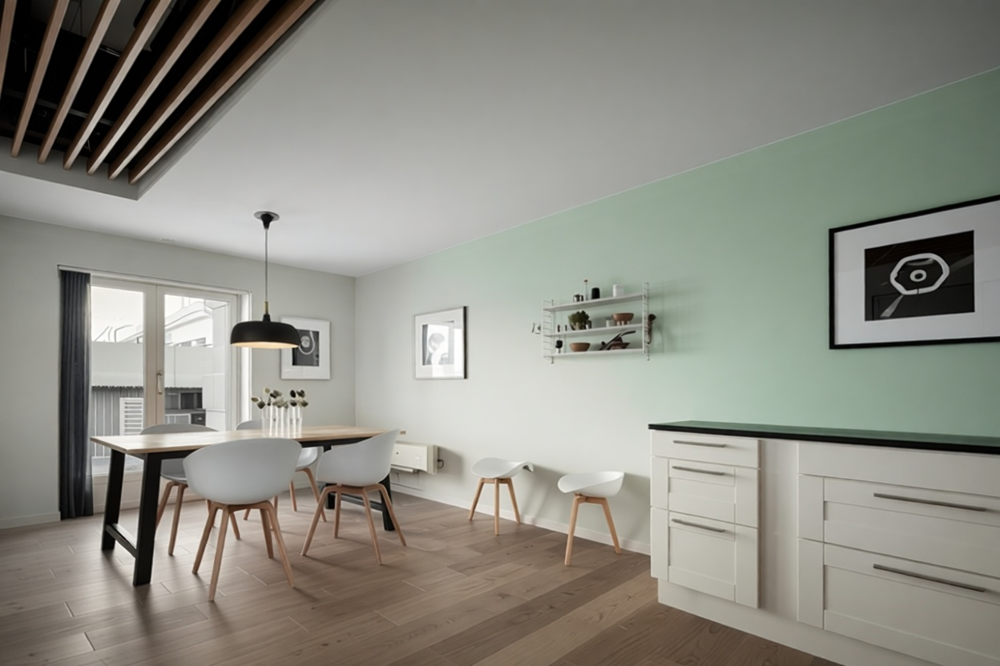
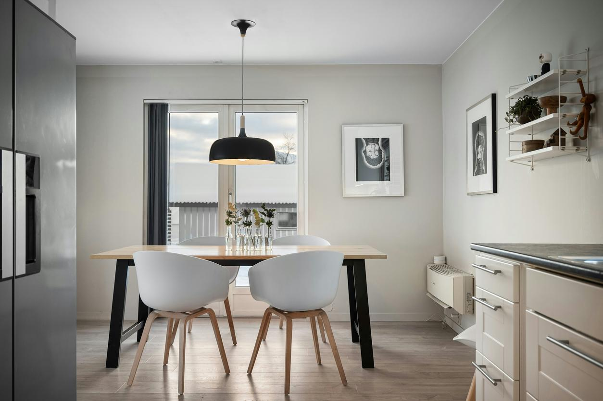
VGGT pose (estimated pose)
trans: -0.552, 0.007, 0.327
rot: 5.003, 45.310, -1.127
GT pose (target pose)
trans: -2.515, -0.162, 0.978
rot: 0.963, 36.956, 0.000
∠(rot) = 9.662°
∠(trans) = 10.184°
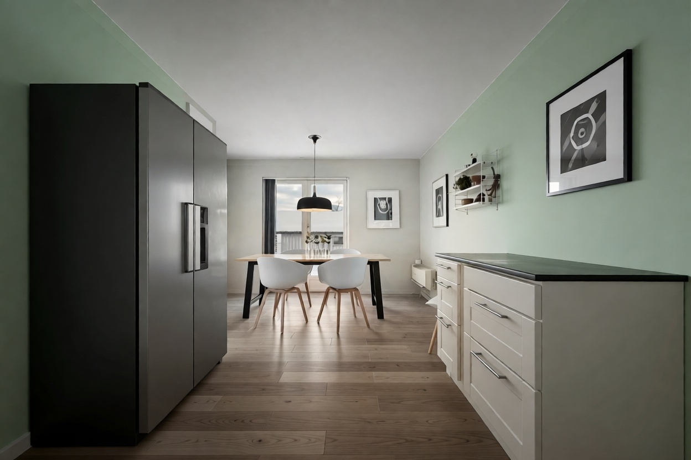
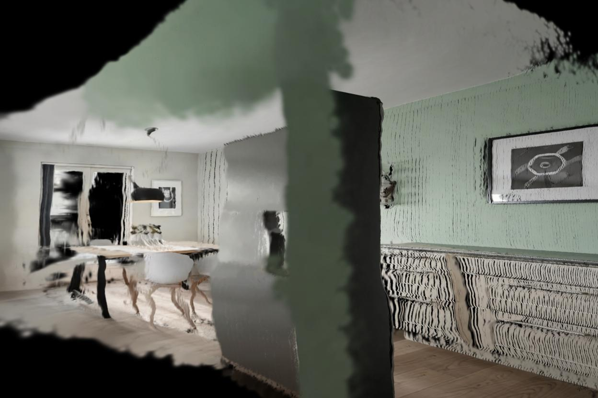
Model Architecture. Given a single photograph, ViewRecNet recommends a camera rotation, translation, field of view, and image orientation (portrait or landscape). It predicts these adjustments from the camera token of a pretrained VGGT backbone. During training, an auxiliary head predicts camera rays from patch tokens, providing dense geometric supervision.

Quantitative analysis. On ViewRecEval, ViewRecNet achieves the highest AUC@30 (0.5271). Human raters select its recommendation as the best in 44.48% of comparisons, the highest share among the five methods.
| Method | Image-level Consistency | Pose-level Consistency | Preference | ||||||
|---|---|---|---|---|---|---|---|---|---|
| SSIM ↑ | LPIPS ↓ | PSNR ↑ | CLIP-I ↑ | AUC@30 ↑ | Dist. ↓ | LLM-Better ↑ | LLM-Imp. ↑ | Human-Best ↑ | |
| CACNet | 0.3616 | 0.7178 | 14.89 | 0.8608 | 0.3157 | 0.4843 | 34.40% | – | 20.50% |
| Venus-Q | 0.3584 | 0.7330 | 14.73 | 0.8623 | 0.2990 | 0.4475 | 25.60% | – | 20.20% |
| PPC | 0.3915 | 0.7167 | 15.10 | 0.6977 | 0.3060 | 0.5961 | 32.10% | 53.10% | 4.22% |
| SPAS | 0.3751 | 0.7120 | 15.05 | 0.8421 | 0.4686 | 0.4587 | 35.70% | 52.00% | 10.60% |
| ViewRecNet | 0.3929 | 0.6919 | 15.31 | 0.8812 | 0.5271 | 0.3080 | Ref. | 67.80% | 44.48% |
Arrows indicate whether higher or lower values are better. “Ref.” marks the reference method in pairwise LLM comparisons; “–” indicates that the metric does not apply.
Qualitative analysis. Figure 5 compares the recommended views with the expert photographs. Compare the subject’s position and the amount of surrounding context to see how each method changes the framing.
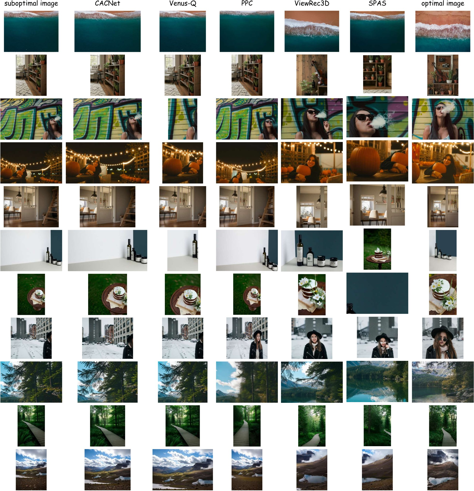